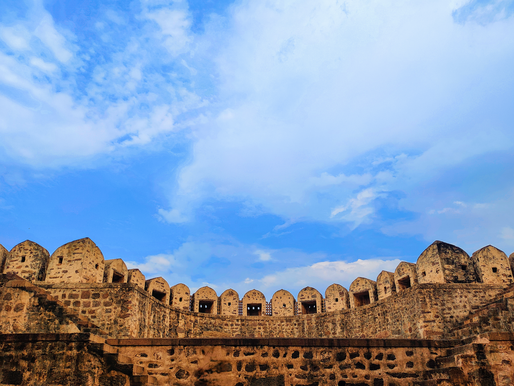
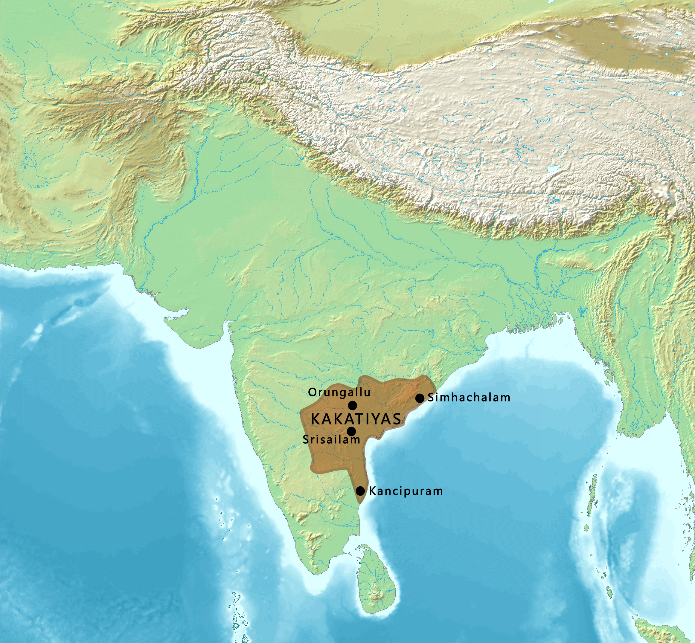

For someone who grows up in Hyderabad, history is almost impossible to avoid. Golconda Fort still stands over the western side of the city. The Qutb Shahi Tombs lie nearby. Charminar remains the symbol of Hyderabad, while palaces, mosques, universities, hospitals and old neighbourhoods carry the marks of the Nizams. Yet these monuments belong to different periods, different dynasties and even different kinds of political systems.
The easiest way to understand Hyderabad's history is therefore not simply to ask, “Who ruled Hyderabad?” We should also ask another question: when they ruled it, how independent were they? Sometimes the rulers of this region were completely independent kings. Sometimes they were governors working for an emperor somewhere else. At other times they were practically independent while still accepting another emperor as their nominal superior. Under the British, the Nizam continued to govern Hyderabad internally, but he was no longer completely free in matters such as war and foreign relations.
The story of Hyderabad is therefore also a story about changing kinds of power.

Before Hyderabad: The World of the Kakatiyas
The city of Hyderabad did not yet exist when the first part of this story begins. During the medieval period, much of what is now Telangana was controlled by the Kakatiya dynasty, whose capital was at Warangal, then known as Orugallu. By the height of their power, the Kakatiyas had become independent rulers of a substantial Telugu-speaking kingdom.
Golconda already existed during this period, although it looked very different from the enormous stone fortress we know today. An earlier mud fort existed at the site and was associated with the rulers of Warangal. It would later be enlarged dramatically under the Bahmanis and especially the Qutb Shahis. This means that if we could travel back to roughly the thirteenth century and stand on the hill where Golconda Fort now stands, we would not be standing inside Hyderabad. Hyderabad had not yet been founded. We would be standing at a fortified position within the wider political world of the Kakatiya kingdom.

The Kakatiyas were not merely governors working for another empire by this stage. They were sovereign rulers. Their political centre was Warangal, and they competed with other kingdoms of southern and central India. That situation changed dramatically when the powerful Delhi Sultanate began expanding south. Repeated armies were sent into the Deccan from northern India. Finally, in 1323, the forces of the Tughluq dynasty defeated the Kakatiya ruler Prataparudra II and captured Warangal. For a time, Telangana therefore came under the authority of rulers based far away in Delhi.
.png)
But controlling the Deccan from Delhi was extremely difficult.
Delhi Comes South, but Cannot Hold the Deccan
The collapse of Kakatiya power did not immediately produce a peaceful new order. Local chiefs and regional powers, including the Musunuri Nayakas and others, resisted outside control and fought over former Kakatiya territory. The years after the fall of Warangal were therefore not a simple transition from one stable kingdom to another. At the same time, the Delhi Sultanate itself was struggling to control the enormous territories it had conquered. The Deccan was large, distant and politically complicated. Governing it from Delhi proved difficult.
Eventually, powerful Muslim nobles in the Deccan rebelled against the Sultan of Delhi. In 1347, they established a new independent kingdom: the Bahmani Sultanate. This was a major change in political status. The Bahmani rulers were no longer governors of Delhi. They had broken away from Delhi and created their own sovereign state.
The Bahmani Sultanate and the Rise of the Deccan
The first Bahmani capital was Gulbarga, today called Kalaburagi. The capital was later moved to Bidar. The Bahmani Sultanate became one of the great powers of the Deccan. Its territory changed repeatedly through war, but it controlled large parts of what are now Maharashtra, Karnataka and Telangana. Golconda became an important Bahmani possession.

At this point, it is useful to widen our view beyond Hyderabad itself. The political world of the Deccan was much larger. To the south stood the great Vijayanagara Empire, centred eventually around the magnificent city of Hampi. The Bahmani rulers and Vijayanagara fought repeated wars over territory, trade routes and especially the fertile Raichur Doab, the land between the Krishna and Tungabhadra rivers.
This is why places such as Bidar, Gulbarga and Raichur are important when studying Hyderabad's history. Modern state borders can make them seem separate from Telangana, but historically they belonged to the same larger Deccan political world. Over time, however, the Bahmani government weakened. By the late fifteenth and early sixteenth centuries, governors and powerful nobles began creating kingdoms of their own. The Bahmani Sultanate eventually broke apart into several states usually called the Deccan Sultanates.
Among them were Ahmadnagar, Bijapur, Bidar, Berar and, most importantly for our story, Golconda.

The Qutb Shahis: When Golconda Became a Kingdom
The dynasty that emerged at Golconda was the Qutb Shahi dynasty. Its founder, Sultan Quli Qutb-ul-Mulk, had originally served as a Bahmani governor. As Bahmani authority collapsed, he gradually became the independent ruler of the territory under his control. This is another important change in political status. Golconda had once been part of the Kakatiya kingdom. It had later been controlled by the Bahmanis. Now the governor of Golconda was turning his province into an independent kingdom of his own.
By the early sixteenth century, the Sultanate of Golconda had emerged. For roughly the first century of Qutb Shahi rule, there was no higher emperor whose ordinary orders the Qutb Shahi rulers had to obey. They were sovereign rulers.

The kingdom was also much larger than Hyderabad or modern Telangana. At different periods, Qutb Shahi influence stretched across large parts of the eastern Deccan and toward the southeastern coast. The kingdom gained access to the Bay of Bengal and important trading ports such as Masulipatam, modern Machilipatnam. This coastal access helped make Golconda extraordinarily wealthy. Agriculture produced enormous revenue, but international trade was equally important. Merchants connected the kingdom to Persia, Arabia and Southeast Asia, while Portuguese, Dutch and English traders increasingly entered the region.
Golconda also became internationally famous for diamonds. The name “Golconda” eventually became associated far beyond India with extraordinary wealth.
The Culture of the Qutb Shahis
The Qutb Shahi rulers were Twelver Shi'a Muslims with strong cultural connections to the Persian-speaking world. Persian language, architecture and court culture were influential. Iranian migrants served at court, and Shi'a religious traditions were visible in the royal culture of the state. But Golconda was not simply a copy of Iran placed in southern India.
The Qutb Shahi kingdom was deeply connected with the people of the Deccan. Telugu-speaking warriors, administrators, merchants and landholders formed important parts of its political and economic system. Persian, Arabic, Telugu and the developing Dakhni language interacted within this environment. That mixture became one of the foundations of later Hyderabadi culture. The Islamic history of Hyderabad therefore did not simply arrive from Delhi. A distinct Deccani Muslim civilization had already been developing in southern India for centuries.

The Birth of Hyderabad
Then, in 1591, something happened that permanently changed the region. The fifth Qutb Shahi ruler, Muhammad Quli Qutb Shah, founded a new city east of Golconda. That city was Hyderabad. Golconda remained an immensely important fortress and royal centre, but Muhammad Quli created a new planned city beside the Musi River. Its great central monument was the Charminar, standing where the principal roads of the new city crossed.

This distinction remains important even today. Golconda represents the older royal and military centre. Hyderabad represents the new Qutb Shahi metropolis. The Qutb Shahi Tombs lie close to Golconda because that area was the older royal heartland of the dynasty. Charminar, meanwhile, became the centrepiece of the new city.
The Qutb Shahis therefore did much more than simply rule Hyderabad. They created Hyderabad. When we think of the Nizams as the great historical rulers of Hyderabad, it is easy to forget that Hyderabad was already more than a century old before the first Nizam established his rule.
Hyderabad in a Crowded Political World
Around the beginning of the seventeenth century, the Qutb Shahi kingdom was only one of several major powers competing across India and the Deccan. To its west stood Bijapur, ruled by the Adil Shahis. Farther northwest was Ahmadnagar, ruled by the Nizam Shahis. To the south were Vijayanagara and the states that emerged from its territories.
Farther north stood an increasingly powerful force: the Mughal Empire. It is tempting to simplify this period into a permanent conflict between Muslim kingdoms and Hindu kingdoms, but the real politics were much more complicated. The Deccan sultanates frequently fought one another. They also made temporary alliances with one another and with Hindu rulers when their political interests required it. Hindu commanders and administrators held important positions in Muslim-ruled states, and diplomacy regularly crossed religious lines.
The famous Battle of Talikota in 1565, in which several Deccan sultanates joined together against Vijayanagara, was important, but it did not create permanent unity among the sultanates. Afterward they returned to competing with one another.
The Mughal Empire Moves into the Deccan
The political situation began changing as the Mughal Empire expanded southward. Under Akbar and his successors, Mughal power gradually entered the northern Deccan. The Sultanate of Ahmadnagar was slowly destroyed. That brought Mughal territory closer to Bijapur and Golconda.
By the reign of the Mughal emperor Shah Jahan, Golconda faced enormous pressure. In 1636, the Qutb Shahi ruler accepted a settlement that recognized Mughal superiority. But this does not mean that the Mughal Empire simply annexed Hyderabad in 1636. The Qutb Shahi dynasty remained in power.
Its sultan still ruled. Its officials still administered the kingdom. Its army still existed. Its government still collected taxes.
The important difference was that the Qutb Shahi sultan now had to recognize the Mughal emperor as the superior power and accept limits on his political freedom. So after 1636, the Qutb Shahis were no longer as independent as they had been before. They still possessed enormous internal power, but the Mughal emperor stood above them.
Aurangzeb Ends the Qutb Shahi Kingdom
That arrangement did not last forever. The Mughal emperor Aurangzeb spent much of the later part of his reign attempting to bring the Deccan completely under Mughal control. Bijapur was conquered in 1686. Golconda came next.

In 1687, Mughal forces besieged and captured Golconda Fort. The last Qutb Shahi ruler, Abul Hasan Tana Shah, was removed. The Qutb Shahi Sultanate ceased to exist. This was very different from what had happened in 1636. Previously, a Qutb Shahi sultan had remained in Hyderabad while recognizing the superiority of the Mughal emperor.
After 1687, there was no Qutb Shahi sultan at all. Hyderabad and the old Golconda territories became direct parts of the Mughal Empire.

Hyderabad as a Mughal Province
For the next several decades, the Deccan was administered through officials belonging to the Mughal imperial system. Hyderabad was therefore no longer the capital of an independent kingdom. The supreme ruler was the Mughal emperor. Governors in the Deccan exercised authority in his name.
But the Mughal conquest created its own problem. Aurangzeb had conquered an enormous amount of territory, but maintaining control over it was difficult and expensive. When Aurangzeb died in 1707, the Mughal Empire remained enormous, but central authority gradually weakened. Governors, military commanders and regional elites throughout India began becoming increasingly independent.
Bengal developed its own powerful government. Awadh became effectively autonomous. The Marathas expanded rapidly. And in the Deccan, another Mughal governor would build his own state.
His successors would become the rulers Hyderabad remembers as the Nizams.
The First Nizam and the Birth of Asaf Jahi Hyderabad
His name was Mir Qamar-ud-din Khan, although history remembers him better by his titles Nizam-ul-Mulk and Asaf Jah I. He was originally a senior Mughal noble. This is important because Asaf Jah did not initially arrive in Hyderabad declaring himself the king of an entirely separate country. His authority originally came from the Mughal political system.
But by this point, the Mughal emperor could no longer control the Deccan effectively. In 1724, Asaf Jah defeated Mubariz Khan at the Battle of Shakar Kheda and established effective control over the Deccan.

The result was a strange political arrangement. In theory, the Mughal emperor remained above the Nizam. The Nizam continued to recognize Mughal authority ceremonially. In reality, however, the emperor in Delhi had little ability to tell the Nizam how to govern Hyderabad.
Asaf Jah appointed officials, collected taxes, commanded armies, conducted political negotiations and governed the Deccan largely by himself. So the first Nizam was not completely independent in theory, but he was almost independent in practice. This distinction would appear repeatedly in Hyderabad's history.

The Nizam's Deccan Was Much Bigger Than Hyderabad
The territory associated with the Nizams should not be imagined as today's Hyderabad city or even simply modern Telangana. The Asaf Jahi rulers inherited claims over an enormous part of the Deccan. But claiming territory and controlling it were two different things. The eighteenth century was one of the most politically unstable periods in Indian history.
The Nizams had to deal with the rapidly expanding Marathas, the kingdom of Mysore, rival rulers in the Carnatic and eventually the French and British East India Companies. The Marathas were especially dangerous. Under the Peshwas, Maratha armies became one of the strongest military forces in India. They repeatedly fought the Nizams and forced Hyderabad to make territorial or financial concessions at different times. The first Nizam had created a potentially enormous state, but his successors never enjoyed uncontested control of the entire Deccan.
Hyderabad was powerful, but it was surrounded by powerful rivals.

The French and British Enter Deccan Politics
European companies had originally come to India mainly for trade. By the eighteenth century, however, the French and British East India Companies were becoming political and military powers. After the death of Asaf Jah I in 1748, disputes over succession in Hyderabad became connected with wider wars involving the French and British. Both European powers supported different Indian allies.
These struggles formed part of what became known as the Carnatic Wars. For Hyderabad, this created a difficult problem. How could the Nizam protect his dynasty against the Marathas, Mysore and competing European military forces? Eventually, Hyderabad moved closer to the British.
That decision helped the Nizam's dynasty survive. But it also greatly reduced its independence.
Hyderabad Becomes a British-Protected Princely State
A major turning point came in 1798, when Nizam Ali Khan entered into the British Subsidiary Alliance system.

Under this arrangement, British troops were stationed for the defence of Hyderabad. French military influence in the Nizam's service was removed, and later agreements strengthened British control over Hyderabad's external relations. From the Nizam's point of view, the arrangement offered protection. From the British point of view, it placed Hyderabad firmly inside the British political system. The Nizam could no longer freely make alliances with other powers or conduct foreign policy like a completely independent ruler.
But this did not mean Hyderabad became an ordinary British province. That difference is extremely important. The British directly administered areas such as the Madras Presidency and Bombay Presidency. Hyderabad was different.
The Nizam continued to possess his own government. His administration collected taxes, maintained courts and police, appointed officials and governed millions of people. The British relationship with states such as Hyderabad eventually became known as paramountcy. Britain was the supreme outside power, while the Nizam retained substantial authority inside his own state.
Hyderabad therefore occupied a middle position. It was not a completely independent country. But it was also not simply another province directly governed by Britain.
Hyderabad and Secunderabad: Politics Written into Geography
One of the most interesting consequences of the British alliance can still be seen in the geography of the modern city. Hyderabad remained the Nizam's great capital. North of it developed Secunderabad, closely associated with the British military cantonment.

In a very real sense, the twin cities reflected the political relationship between the two powers. Hyderabad represented the Nizam's royal and administrative world. Secunderabad represented the permanent British military presence beside it. The political system of the nineteenth century was therefore visible in the geography of the city itself.
The Hyderabad State of the Nizams
By the late nineteenth and early twentieth centuries, Hyderabad State was one of the largest and most important princely states in India. It was also much larger than modern Telangana. The Nizam's territory included three major linguistic regions. The Telugu-speaking region covered most of what we now call Telangana.
The Marathi-speaking region, known as Marathwada, included places such as Aurangabad and Nanded. The Kannada-speaking region included areas around places such as Gulbarga and Raichur.


This is why the history of Hyderabad cannot be understood using today's state boundaries. Cities that are now in Maharashtra and Karnataka spent generations under the same Nizam who ruled Hyderabad. The Nizam's Hyderabad was therefore not merely a city-state. It was a large, multilingual Deccan state operating inside the wider political system of British India.
Two Great Layers of Hyderabadi Culture
Modern Hyderabad carries the marks of both the Qutb Shahis and the Nizams. It is useful to think of them as two great historical layers. The Qutb Shahi layer gave Hyderabad its beginning. Golconda was their capital. They founded Hyderabad. They built Charminar. Their rulers were buried in the Qutb Shahi Tombs. Their court helped develop the Persian, Telugu and Dakhni mixture that gave the Deccan a cultural identity different from northern Muslim centres such as Delhi.
The Asaf Jahi layer, created by the Nizams, came later. Their long rule developed much of the aristocratic culture now associated with old Hyderabad. The Asaf Jahi period also transformed Hyderabad into a modern princely capital with palaces, universities, courts, hospitals, railways and a sophisticated administration.

Chowmahalla Palace, the ceremonial and royal centre of the Asaf Jahi dynasty.

Falaknuma Palace in a nineteenth-century photograph, representing the later aristocratic world of princely Hyderabad.

The Arts College of Osmania University, one of the most recognizable institutions created in the later Nizam period.

The High Court building, part of the monumental civic architecture of early twentieth-century Hyderabad.
Chowmahalla Palace represents the royal and ceremonial world of the Nizams. Falaknuma represents the immense wealth and aristocratic life of late princely Hyderabad. Osmania University represents the educational ambitions of the twentieth-century state. The High Court represents the monumental public institutions that appeared in the final decades of Nizam rule.
This is why describing Hyderabad simply as “the city of the Nizams” misses an important part of its story. A better description would be: Hyderabad was a Qutb Shahi city that later became the capital of an Asaf Jahi state. The Qutb Shahis created the city.
The Nizams inherited it and shaped it for more than two centuries.
The Last Nizam and the End of British Paramountcy
The seventh and final ruling Nizam was Mir Osman Ali Khan.

By his reign, Hyderabad had become one of India's wealthiest and most developed princely states, with its own institutions, administration, currency and strong regional identity. But above the Nizam still stood British paramountcy. Then came 1947. Britain decided to leave India.
British India was partitioned into India and Pakistan, but there were also hundreds of princely states whose rulers had previously existed under British paramountcy. When British paramountcy ended, their relationship with Britain ended with it.

The Nizam did not want Hyderabad simply absorbed into India. For a short period, he attempted to keep Hyderabad separate. This produced one of the strangest moments in the city's history. Hyderabad was no longer under British paramountcy.
It had not joined Pakistan. It had not yet joined India. For roughly a year, the state existed in an uncertain position while the Nizam's government and the Government of India negotiated. Inside Hyderabad, however, the situation became increasingly unstable.
There was intense political conflict over the state's future, the armed Razakar movement, communal violence and the continuing Telangana peasant rebellion in parts of the countryside. Relations between Hyderabad and India deteriorated. Eventually, India decided to use military force.
Operation Polo and the End of the Nizam's State
On 13 September 1948, Indian armed forces entered Hyderabad State in an operation officially known as Operation Polo.

The military campaign lasted only several days. Hyderabad's forces surrendered, and by 17 September 1948, the Nizam's government had accepted Indian control. The political world that had begun with Asaf Jah I in 1724 had effectively come to an end. The Nizam himself remained an important constitutional figure for several more years during the transition, but Hyderabad was now part of the Indian Union.
Hyderabad State Survives for a Few More Years
Interestingly, Hyderabad State did not disappear from India's internal map immediately after 1948. It continued to exist as a state within India for several more years. But there was a major problem. Its borders had been created by centuries of conquest, diplomacy and dynastic rule, not according to language.
The new Indian government was gradually reorganizing states along linguistic lines. That meant the old Hyderabad State was unlikely to survive forever. The major change came in 1956.

The Telugu-speaking Telangana districts of Hyderabad State were joined with Andhra State to create Andhra Pradesh. The Marathi-speaking districts of Marathwada became part of Bombay State and later Maharashtra. The Kannada-speaking districts became part of Mysore State, later renamed Karnataka. After more than two centuries, the territorial state ruled by the Nizams disappeared completely from the map.
Hyderabad remained. The kingdom around it was gone.
Hyderabad Becomes the Capital of Andhra Pradesh
From 1956, Hyderabad became the capital of the new state of Andhra Pradesh. This began another long chapter in the city's history. Hyderabad expanded dramatically beyond the old Qutb Shahi and Nizam-era city. New neighbourhoods, industries, universities, government institutions and eventually major technology companies transformed the metropolitan area. Yet the question of Telangana's separate regional identity never completely disappeared.
A political movement for a separate Telangana state continued over several decades. Finally, on 2 June 2014, Telangana became a separate state of India. Hyderabad became its capital.
.svg)
Understanding Hyderabad as Layers of Power
Once the whole story is placed together, Hyderabad's history becomes much easier to understand. During the Kakatiya period, Golconda belonged to a sovereign kingdom centred at Warangal. After the Delhi Sultanate conquered the region, Telangana became part of an empire ruled from northern India. The Bahmanis then rebelled against Delhi and created an independent Deccan sultanate.
When Bahmani power collapsed, their governor at Golconda became the ruler of a new independent Qutb Shahi kingdom. The Qutb Shahis built Golconda into a great capital and then founded Hyderabad itself. Later they were forced to recognize Mughal superiority before Aurangzeb finally conquered their kingdom completely in 1687. Hyderabad then became part of the Mughal Empire.
As Mughal power weakened, a Mughal governor, Asaf Jah, established his own government in the Deccan. The Nizams continued for a time to recognize the Mughal emperor in theory, but in practice they governed almost independently. Then British power expanded across India. The Nizams survived by becoming British allies, but this meant giving up much of their external independence. They continued to govern Hyderabad internally while Britain became the supreme power above them. When British paramountcy disappeared in 1947, the final Nizam briefly tried to preserve Hyderabad as a separate political state.
That attempt ended with Indian military action in 1948. Finally, the old Hyderabad State itself was divided along linguistic lines in 1956, and Telangana eventually became a state of its own in 2014.
Walking Through the History Today
What makes Hyderabad special is that much of this history can still be physically visited. Start at Golconda Fort, and you are standing at a site whose story reaches back to the political world that existed before Hyderabad itself, through the Kakatiyas and Bahmanis and into the Qutb Shahi kingdom. Walk through the Qutb Shahi Tombs, and you are among the rulers who transformed Golconda into a major Deccan state and eventually created Hyderabad. Travel east to Charminar, and you reach the centre of the new city founded by Muhammad Quli Qutb Shah in 1591.
Move into the palaces and institutions associated with the Nizams, and you enter the Asaf Jahi period. Cross toward Secunderabad, and another historical layer appears: the British military presence that existed alongside the Nizam's state. Continue through Osmania University, the High Court, the old hospitals, railway buildings and twentieth-century neighbourhoods, and the final decades of princely Hyderabad begin to appear. Modern Hyderabad therefore does not belong to one dynasty or one period.
It is a city built in historical layers. The Kakatiyas left the earlier political landscape. The Bahmanis connected the region to the wider world of the Deccan sultanates. The Qutb Shahis created Golconda's great kingdom and founded Hyderabad.
The Mughals conquered it. The Nizams rebuilt Hyderabad as the capital of another major Deccan state. The British surrounded that state with their system of paramountcy. Independent India absorbed it, divided its old territories and eventually made Hyderabad the capital of Telangana.
All of those histories remain visible in the city today. To understand Hyderabad, then, is not simply to memorize a list of rulers.
It is to understand how a fortress belonging to a medieval Telugu kingdom became the centre of a Bahmani province; how that province became the independent Sultanate of Golconda; how the rulers of Golconda created a new city called Hyderabad; how that kingdom fell to the Mughals; how a Mughal governor created another virtually independent state; how that state survived by accepting British supremacy; and how, after centuries of changing political systems, Hyderabad became the capital of modern Telangana. That is the larger story behind the forts, tombs, palaces, mosques and streets of Hyderabad.
Image and Map Credits
All visuals use the exact Wikimedia Commons files specified for this article. Original media is used; licensing details remain available on each linked file page.
- File:Mughal Empire, 1707.pngAvantiputra7 · CC BY-SA 4.0
- File:Portrait of the Emperor Aurangzeb MET 136889.jpgThis file was donated to Wikimedia Commons as part of a project by the Metropolitan Museum of Art . See the Image and Data Resources Open Access Policy · CC0
- File:Asaf Jah I of Hyderabad.jpgUnknown author Unknown author · Public domain
- File:India-ImperialGazetteer-1765.jpgJ. G. Bartholomew and Sons. Edinburgh · GFDL
- File:Nizam Ali Khan, Asaf Jah II, Nizam of Hyderabad.jpgUnknown author Unknown author · Public domain
- File:Secunderabad Cantonment.jpgB.C. Regel · Public domain
- File:Usman Ali Khan.jpgBourne & Shepherd · Public domain
- File:1947 India showing Provinces, States and Districts by Survey of India.jpgSurvey of India · Public domain
- File:Operation Polo 1948.jpgArchives of the Chicago Sun-Times · Public domain
- File:Hyderabad State reorganization 1956.pngRamcrk · CC BY-SA 3.0 / GFDL
- File:Hyderabad in Telangana (India).svgAnkit2 / C1MM · CC BY-SA 4.0
- File:The Golkonda Fort.jpgSwethagraphy · CC BY-SA 4.0
- File:Map of the Kakatiyas.pngMap created from DEMIS Mapserver , which are public domain. Koba-chan . Reference: [1] · CC BY-SA 3.0
- File:Map of the Delhi Sultanate in 1320 (world).pngnaturalearthdata.com, offered to the Public Domain per Terms of Use · CC0
- File:Map of the Bahmani Sultanate.pngMap created from DEMIS Mapserver , which are public domain. Koba-chan . Reference: [1] Borders by Noorullah21 · CC BY-SA 4.0
- File:Deccan Sultanates in 16th Century.jpgBeylarbey · CC BY 4.0
- File:Map of Golconda Sultanate.pngBeylarbey · CC BY-SA 4.0
- File:Qutb Shahi Tombs.jpgBernard Gagnon · CC BY-SA 3.0
- File:Charminar of Hyderabad Telangana.jpgKdas1977 · CC BY-SA 4.0
- File:Map of Hyderabad, Early 1800s.jpgUnknown author Unknown author · Public domain
- File:Hyderabad state from the Imperial Gazetteer of India, 1909.jpgClarendon Press · Public domain
- File:Hyderabad State in British India 1940.pngSwiãtopôłk · CC0
- File:Chowmahalla Palace Hyderabad Telangana.jpgKavali Chandrakanth KCK · CC0
- File:Faluk-numa Palace, Hyderabad, India.JPGLala Deen Dayal (1844-1905) · Public domain
- File:OsmaniaUnivArtsCollege.JPGNbsubbaiah at English Wikipedia · Public domain
- File:High Court of Telangana in Hyderabad.jpgiMahesh · CC BY-SA 4.0